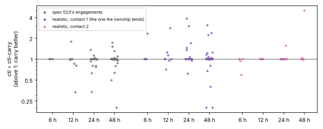
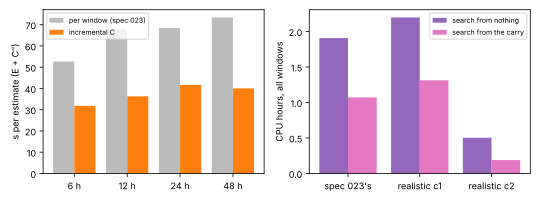
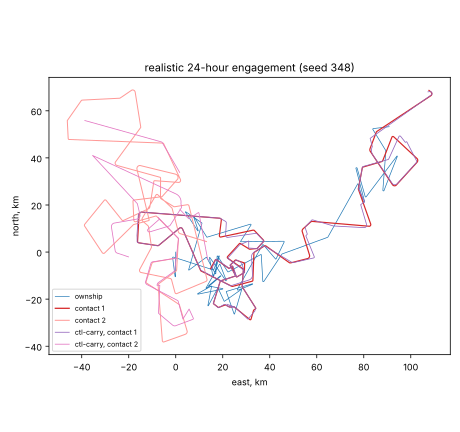
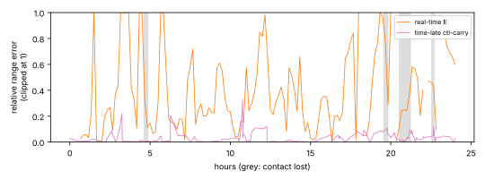

Long engagements, part 2
carrying state · an incremental C · realism
2026-11-18 · spec 024 · an investigation, not a gate · gitma2
Overview: note 12's three recommendations, built
- Carry: each time-late window starts its search from the previous window's declared history instead of from nothing
- Incremental C: one confirmation per 2-hour block of estimates; each keeps the confirmed legs inside its window
- Realism: the ownship steers on what it measures (range belief ±30%); gaps; detection fading at 40 km; a second contact it does not manoeuvre for
Seed 348 with a separate realism stream: contact 1 is spec 023's target, so the comparison is paired.
Carrying state: same accuracy, cheaper search

Median window ratio 1.00 in every set. Carry better / worse: 15 / 20 (spec 023's), 22 / 11 (realistic contact 1). Its start costs about 55% of the search it replaces (about 13% of a window).
Incremental C: 1.7× cheaper, worse later in each block

E's median range error at 24 / 48 h: 14.3 / 20.9% per window, 29.8 / 35.6% incremental. The first estimate of each block matches; from the 5th on it is 2–4× worse: the longer history before the crop, cause not established.
Realism: a tended and an untended contact

Contact 1 held 67–85% of the time; ctl 1.5–2.2% (spec 023's: 1.6–2.1%). Contact 2 drifts to 110 km, held 20% of the time; ctl 7.3% on the windows with its bearings.
Contact 1: error against time, gaps shaded

Real-time E (incremental C) and time-late ctl-carry, 24-hour realistic engagement.
Not achieved
- No accuracy gain from carrying state; the incremental C loses accuracy and is not adopted
- Mis-association barely exercised: 0–8 swapped bearings per engagement
- One engagement per length: anecdotes, not rates; no registered study yet
Next (the owner's choice)
- A registered study on 6- and 12-hour realistic engagements (seeds 349–351): carry non-inferiority, the cost of an untended contact, the IMM's drift
- Or shorter incremental blocks measured on tuning data first
- Or stop the long-engagement track here
Note: docs/research/13-long-engagements-2.md · Record: experiments/20261117-long2/ · Figures: scripts/research/long2_charts.py, sidecars beside each SVG